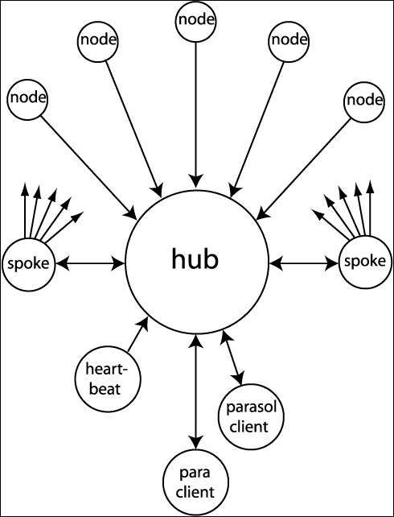

THE PARASOL PARALLEL BATCH SYSTEM
OVERVIEW
Parasol provides a convenient way for multiple users to run large batches
of jobs on computer clusters of up to thousands of CPUs. Parasol was
developed initially by Jim Kent, and extended by other members of the
Genome Bioinformatics Group at the University of California Santa Cruz.
Parasol is currently a fairly minimal system, but what it does it does well.
It can start up 500 jobs per second.
It restarts jobs in response to the inevitable systems failures that occur
on large clusters.
If some of your jobs die because of your program bugs, Parasol can help manage
restarting the crashed jobs after you fix your program as well.
The parasol source is at
http://www.soe.ucsc.edu/~kent/src/parasol.tgz
.
PARASOL QUICK START
To start things rolling you need to make a directory to put the batch in,
and create a job list in this directory.
A basic job list is just a series of command lines, one for each job.
A fancier job list can contain checks on the input and output files for each job.
While generally jobs in a batch are somehow related, they need not be.
Here's a sample job list that compiles some code in parallel. :
cc -c lions.c
cc -c tigers.c
cc -c bears.c
cc -c turkeys.c
cc -c bats.c
To run this on parasol you'd log onto the machine running the parasol server and
mkdir compileTheAnimals
cd compileTheAnimals
para make ../job.lst
assuming you'd already created job.lst .
The para program will hang out periodically printing a little information until
all the jobs are done or one of them fails repeatedly.
If your job has problems you can retrieve them with
para problems
This will among other things copy over the standard error output from the cluster nodes.
You may need to put the parasol host in your .rhosts file for this to work.
RUNNING A BIG BATCH OF JOBS WITH PARASOL
Parasol is really meant for large batches of jobs.
One big set of jobs we do at the Genome group is comparing the mouse vs. the human genomes.
Since humans and mice have a common ancestor, there are stretches of DNA that are
similar (homologous) between the two species.
However since this common ancestor was almost 100 million years ago
most of the DNA has changed quite a bit.
It's not possible to find homologous regions with a simple string search.
Instead sophisticated "alignment" techniques must be used.
Aligning whole genomes against each other is one of the most compute intensive areas
in bioinformatics.
Fortunately it is a problem that can be easily distributed across many machines.
We can break the human genome into approximately 200 pieces, and the mouse genome
into approximately 1000 pieces.
We then align each piece of the human against each piece of the mouse.
This lets us split divide the big job into 200,000 little jobs.
Each of these little jobs might take about 10 minutes on one computer.
On 1000 computers the whole set of jobs should take less than two days.
Since parasol wants a line of input for each job, clearly we need an automatic way
of generating the job list. This is where the program "gensub2" comes in.
Gensub2 takes as input two lists of files and a template file.
The template file contains three parts - a preamble (everything before the #LOOP line)
which is literally copied to the output, a middle section which is repeated
in the output with the filenames from the lists substituted in,
and a postscript (everything after the #ENDLOOP line) that is copied literally to the output.
We've used gensub2 with a number of schedulers - Condor and Codine as well as Parasol -
and it has proven a simple but effective tool.
Here is a gensub2 template file for creating mouse/human alignments with the BLAT program:
#LOOP
/cluster/bin/blat $(path1) $(path2) out/$(root1)_$(root2)
#ENDLOOP
Note depending on how parasol was set up on your system you may need to include the full path name for executables. To create a job list do the following steps:
mkdir mouseVsHuman
cd mouseVsHuman
mkdir out
ls -1 /data/human/dna/pieces/*.seq > human.lst
ls -1 /data/mouse/dna/pieces/*.seq > mouse.lst
gensub2 human.lst mouse.lst template jobList
You could at this point run "para make" on jobList.
In the end if nothing went wrong you'd have a directory 'out' full of files
that look something like mouse001_human001, mouse001_human002, ...
However this is a big enough job that it's very likely something will go wrong.
It would be good to do a little sanity check on the output.
It wouldn't be a bad idea to write a program to double-check the output yourself.
However Parasol can do some basic checks automatically.
If we change our template file to read:
#LOOP
/cluster/bin/blat $(path1) $(path2) {check out line+ out/$(root1)_$(root2)}
#ENDLOOP
then Parasol will check that each file has at least one line,
and that the last line is complete.
This won't catch every problem, but it will catch the vast majority of them.
Parasol will also of course detect program crashes.
It's possible to put checks on input files as well.
RESOURCES
The default job resources are 1 cpu and the amount of ram
a typical node has divided by the number of cpus.
You can however specify the resources that your batch needs in two ways.
If the cluster can find machines with sufficient
resources, it will allocate them to your batch.
One convenient method of specifying required batch resources is
to use command line options to "para make" or "para create".
To run a batch of jobs needing 2GB and 1CPU, do "para make -ram-2g -cpu=1 spec".
For specifying ram you may use t for terabyte, g for gigabyte, m for megabyte,
k for kilobyte. You may also just use the entire number
as in 2000000000 for 2GB.
The other way is to use additional per-job optional clauses in the job-spec
using the "use" clause. You can specify the number of cpus and the amount
of ram that is needed.
We can change our template file to read:
#LOOP
/cluster/bin/blat $(path1) $(path2) out/$(root1)_$(root2) {use cpu 1} {use ram 2g}
#ENDLOOP
then Parasol will ensure that your batch jobs get 1 CPU and 2GB ram.
These "use" clauses may be combined with the other clauses the system supports.
If this is a job liable to take more than a day,
rather than running 'para make',
I like to take a more interactive approach as follows:
para create jobList # Create job tracking database
para try # Run ten jobs
para check # Check up on jobs
para push # Push up to 100,000 jobs
para check # Check up on jobs
para push # Retry any crashed jobs so far
para time # Collect timing information.
It's always good to do a 'try' before a 'push',
letting the first ten jobs run for five minutes or so and then checking up on them.
Note that "para push" will only resubmit jobs that have already crashed when para push is run.
If you're interactively monitoring your jobs periodically pushing and checking (and timing) is useful.
Once you decide things are going well you can issue a "para shove" command,
which will will check on your jobs every few minutes, restarting jobs if necessary,
until the jobs are all done or one of the jobs has failed (crashed repeatedly).
If you want to go back to interactive monitoring of your jobs after a "para shove",
just hit [control-C]; to stop the shoving.
Typically there are three types of problems you encounter with a big batch of jobs.
The most common problem is a new bug in the program you're running,
which causes all or most of your jobs to crash.
Doing a "para try" will usually find these problems without wasting a lot of cluster time.
If 25 of your jobs crash in a row, the batch will be considered sick, the batch queue
will be flushed, no further jobs from that batch may be pushed, and the sick batch
status will be returned to the para client.
After fixing the problem, do "para clearSickNodes" to reset the sick batch status.
Another common problem is when one of the machines in the cluster is acting flaky for some reason
- often because it is having an i/o problem of some sort.
The hub remembers which nodes appear to be sick and after 3 consecutive crashes,
the batch considers the node sick and stops scheduling jobs on it from the batch.
If you think the node has been fixed and want to try it again
you can run para clearSickNodes to reset the sick nodes' status.
Do "parasol list sick" to list any machines that are considered sick
by all currently running batches.
Do a "para showSickNodes" to get a report on the nodes that are having trouble with your batch.
If so tell the system administrators about the problem.
The "parasol remove machine" command should be used to remove the machine from parasol service
until the problem can be fixed.
The third common problem is due to rarely-manifesting bugs in your code.
The symptom of this is the same job crashing repeatedly on different machines.
There's no cure for this except doing some debugging
- usually starting with isolating the minimum input needed to cause the problem.
THE PARASOL ENVIRONMENT
Parasol sets up a few environment variables prior to running jobs.
The PARASOL variable is set to the version of Parasol that is currently running.
Programs can use this to determine whether they are running under Parasol.
The JOB_ID variable is set to a unique number for each job that is run.
How the PATH variable is set up depends on how Parasol was installed.
At UCSC we have it set up to run things out of the bin directory of each user
as well as /bin, /usr/bin, and /cluster/bin.
In general Parasol's PATH will be different from the path in your shell,
so when in doubt include the appropriate directory names in front of your executables.
You can also depend on the USER, HOME, and HOST variables being set
to your user name, your home directory and the name of the machine the program is running on.
Beyond this what is in the environment varies from installation to installation.
INSTALLING PARASOL
To install parasol you'll need to create a list of the machines in your cluster,
and then run the 'paraNodeStart' which will launch a 'paraNode' server on each machine.
rsh is used to start the paraNode daemons by default.
To specify ssh instead use paraNodeStart rsh=/somepath/ssh.
Next pick a machine, preferably one without much else going on in it to launch a 'paraHub' server.
Parasol users will then log onto this machine to launch jobs either
using the 'para' or the 'parasol' commands.
You can bring down the paraNode servers with the 'paraNodeStop' command.
You can bring down the paraHub with 'paraHubStop'.
Here's a list of the user programs in the Parasol package:
para - a user-level command which manages a single batch of jobs
gensub2 - a user-level command for generating large batches of jobs, each on a different set of files.
Here's a list of the administrative programs:
parasol - administrative command for looking at all active jobs in the system
and adding or removing nodes on the fly.
Users may find this command handy too,
though several aspects of it can only be accessed by root.
paraNode - runs jobs on a compute node
paraHub - job scheduler
paraNodeStart - start up paraNode daemons
paraNodeStop - bring down paraNode daemons
paraNodeStatus - query status of paraNode daemons
paraHubStop - bring down paraHub daemon
The first thing an administrator needs to do is create a list of machines to use as compute nodes.
This list is a tab-separated file with one line for each machine and the following fields:
[host name] - Network name of host. Must match $HOST on node machine for resurrect to work.
[number of cpus] - Number of CPUs to use in the machine
[meg of memory] - Megabytes of memory in machine
[local temp dir] - A directory in the machine for temp files.
Parasol puts the standard error output here.
Ideally this directory should periodically have files not accessed
for a week removed.
[local data dir] - A directory where local data resides. Ignored for now.
[local data gig] - Size of local data directory. Ignored for now.
[network switch] - Name of network switch this is on. Ignored for now.
Here is a small example:
testBad.node.ucsc 2 1024 /tmp /scratch 36000 r1
kkr1u01.kilokluster.ucsc.edu 2 1024 /tmp /scratch 36000 r1
kkr1u02.kilokluster.ucsc.edu 2 1024 /tmp /scratch 36000 r1
Each cluster machine, as well as the hub, must be set up properly for rsh (or ssh) and
syslog system logging. Please refer to your system documentation for information on
rsh and syslog configuration. RSH or SSH or equivalent is required for paraNodeStart
to start paraNode daemons on cluster machines.
To start up the Parasol system do the following:
ssh parasolhost
mkdir parasolRootDir
cd parasolRootDir
cp machineList .
su root
paraNodeStart machineList hub=parasolHost
userPath=bin sysPath=/share/bin:/usr/local/bin
paraHub machineList &
You may well want to customize the userPath and sysPath according to
the conventions used at your own installation.
Messages are sent to syslog which in Linux goes to /var/log/messages by default.
The hub log messages average about 500 bytes per job,
which can be useful for debugging.
For further security use the -subnet parameter to paraHub which will restrict incoming messages to the hub to a particular subnet.
A common example of this would be
paraHub machineList -subnet=124.168 &
The paraHub daemon will detect machines that are down and work around them.
Every ten minutes it will see if a machine that is down has come back up.
It's possible to add new machines without bringing down the daemon using
parasol add machine tempDir
ARCHITECTURE
The Parasol system consists primarily of the scheduling server paraHub and two clients, parasol and para.
The parasol scheduling system consists of a hub daemon, a heartbeat daemon,
and number of spoke daemons running on the server system,
and a node daemon running on each compute node.
The heartbeat and spoke daemons are pthreads inside paraHub.
The parasol and para clients both communicate only with the hub daemon.
The parasol client is quite lightweight doing little more than forwarding
messages from the command line to the parasol hub and printing the replies.
The para client is more substantial.
It creates a database around a batch of jobs submitted by the user and
tracks the progress of these jobs through the scheduler.
Para does not expect the scheduler or the compute nodes to be completely reliable,
and will resubmit jobs as necessary.
Para creates the batch file originally from the spec file with the create or make command.
Para then reads the batch file in the batch directory and sends udp messages
to paraHub to request jobs be scheduled.
ParaHub identifies batches by the directory they are run from.
It only writes to the results file in the batch directory.
Para reads the results file written by paraHub to determine
which jobs have finished or failed.

Figure 1.
Parasol processes/threads (circles) and udp-message flow (arrows).
All processes/threads reside on the scheduling machine except for the node processes.
A spoke thread sends messages to a node. A special thread sucks incoming udp messages
from the kernel queue and places them into a somewhat larger internal queue for
processing by the main thread.
The Scheduling System
The Hub Daemon and Its Spokes and Heartbeat
The hub daemon is the heart of the parasol scheduling system.
On startup,the hub daemon spawns
the heartbeat thread daemon, the spoke daemon threads,
and the socketSucker thread, which constantly reads from
the input UDP socket queue and places the messages on a large
internal thread-safe queue so that none are lost.
The main hub daemon thread then goes into a loop processing messages from
the internal queue.
The hub daemon does not do anything time consuming in this loop.
The main thing the hub daemon does is put jobs on the job list,
move machines from the busy list to the free list, and call the 'runner' routine.
The runner routine looks to see if there is
a free machine, a free spoke, and a job to run.
If so it will send a message to the spoke telling it to run the job on the machine,
and then move the job from the 'pending' to the 'running' list,
the spoke from the freeSpoke to the busySpoke list,
and the machine from the freeMachine to the busyMachine list.
This indirection of starting jobs via a separate spoke process avoids the
hub daemon itself having to wait to find out if a machine is down.
When a spoke is done assigning a job, the spoke sends a 'recycleSpoke' message to the hub,
which puts the spoke back on the freeSpoke list.
Likewise when a job is done the machine running the jobs sends a
'job done' message to the hub, which puts the machine back on the free list,
writes the job exit code to a results file, and removes the job
from the system.
Sometimes a spoke will find that a machine is down.
In this case it sends a 'node down' message to the hub
as well as the 'spoke free' message.
The hub will then move the machine to the deadMachines list,
and put the job back on the top of the pending list.
The heartbeat daemon simply sits in a loop sending heartbeat messages
to the hub every so often (every 30 seconds currently),
and sleeping the rest of the time.
When the hub gets a heartbeat message it does a few things:
- It calls runner to try and start some more jobs.
(Runner is also called at the end of processing
a recycleSpoke, jobDone, addJob or addMachine message.
Typically runner won't find anything new to run in the heartbeat,
but this is put here mostly just in case of unforeseen issues.)
- It calls a routine to see if machines on the dead list have been fixed
and come back to life.
- It calls a routine to see if jobs the system thinks have been running for a
long time are still running on the machine they have been assigned to.
If the machine has gone down it is moved to the dead list and the job is reassigned.
If the machine is up it lets the hub know if it has already finished the job.
This currently does happen, albeit in perhaps 1 in 10,000 jobs
due to failure for the jobDone message to get through.
If the job is still running the hub gets notified,
and check back on the job five or ten minutes later.
This whole system depends on the hub daemon being able to
finish processing messages fast enough to keep the connection queue
on the hub socket from overflowing. The socketSucker thread
ensures this won't happen.
Each job involves 3 udp messages to the hub socket:
addJob - from a client to add the job to the system
recycleSpoke - from the spoke after it's dispatched the job
jobDone - from the compute node when the job is finished
On some of the earlier Linux kernals we had trouble with the connection queue overflowing
when dispatching lots of short jobs.
This seemed to be from the jobDone messages coming in faster than
Linux could make connections rather than the
hub daemon being slow.
On the kilokluster with a more modern kernal this has been less of a problem
- only manifesting on 1,000 CPUs when running 50,000 jobs that do nothing.
(The shorter the job the more stressful it is on the scheduler).
Should overflow occur the heartbeat processing will gradually rescue
the system in any case, but the throughput will be greatly reduced.
SocketSucker has basically fixed this problem.
When the hub daemon first comes up it queries each node daemon
for running and recently finished jobs.
So the hub can reconnect to running jobs.
If the hub is brought down for maintenance or crashes due to a program error,
CPU time already invested in running jobs on nodes is usually recovered.
Currently jobs that have not yet been sent to nodes will be lost,
though if they are submitted via the 'para' client below,
the para client will resubmit these jobs after noting 'tracking errors.'
The Node Daemon
The node daemon is relatively simple.
It forks off a process to run a job in response to a "run" message over it's
UDP socket from a spoke.
It sends a "jobDone" message to the hub with the return status code and
user and system run times when a job finishes.
It keeps a count of CPUs free, and refuses to start a job unless a CPU is free.
It also will kill a job in response to a "kill" message from the hub.
Because a machine may have multiple CPUs and therefore be running
multiple jobs, the hub specifies both machine and jobid to the node
when communicating.
The node daemon also participates in the heartbeat processing.
It responds to a "resurrect" message with an "alive" message in
the process that leads to a machine that was down being restored to use.
It responds to "check jobId" messages with a response saying whether or not
the job is running, finished or has never been seen.
The paraNode node daemon normally needs to be run as root,
so that it can setuid (SU) to run jobs as the actual user.
But for standalone testing, a developer can run an instance of parasol
on a machine without needing root priveleges. In that case, the node daemon
cannot SU to any other user.
The Para Client
The para client manages batchs of jobs through the scheduler.
It is designed to catch jobs which may have run into problems of any sort,
and give the user a chance to rerun them after the problem is fixed.
The major input to para is a job list.
Each job can have checks associated with it before and after the job itself is run.
Initially para reads the job list and transforms it into a job database.
The central routine of para, paraCycle, reads the job database,
queries the hub to see what jobs are running and waiting,
looks at the results file to see what jobs are finished,
performs output checks on the finished jobs,
sends unsubmitted jobs or jobs that need to be rerun to the hub,
updates the database in memory, and writes it back out.
The database is in a comma-delimited text format with one job per line.
The job database keeps track of the timing and status of each job submission.
The code to read and write this database was generated with AutoSql.
para will avoid loading the hub with more than 100,000 jobs at a time,
and will only submit failed jobs three times before giving up on them.
PARASOL COMMAND REFERENCE
Note that all commands will produce a usage summary if run with no arguments.
In general this summary will be more up to date than the descriptions here.
para
Manage a batch of jobs in parallel on a compute cluster.
Normal usage is to do a 'para create' followed by 'para push' until job is done.
Use 'para check' to check status.
Command Line
usage:
para [options] command [command-specific arguments]
The commands are:
para create jobList
This makes the job-tracking database from a text file with the
command line for each job on a separate line.
options:
-cpu=N Number of CPUs used by the jobs, default 1.
-ram=N Number of bytes of RAM used by the jobs.
Default is RAM on node divided by number of cpus on node.
Shorthand expressions allow t,g,m,k for tera, giga, mega, kilo.
e.g. 4g = 4 Gigabytes.
-batch=batchDir - specify the directory path that is used to store the
batch control files. The batchDir can be an absolute path or a path
relative to the current directory. The resulting path is use as the
batch name. The directory is created if it doesn't exist. When
creating a new batch, batchDir should not have been previously used as
a batch name. The batchDir must be writable by the paraHub process.
This does not affect the working directory assigned to jobs. In defaults
to the directory where para is run. If used, this option must be specified
on all para commands for the batch. For example to run two batches in the
same directory:
para -batch=b1 make jobs1
para -batch=b2 make jobs2
para push
This pushes forward the batch of jobs by submitting jobs to parasol
It will limit parasol queue size to something not too big and
retry failed jobs.
options:
-retries=N Number of retries per job - default 4.
-maxQueue=N Number of jobs to allow on parasol queue.
Default 1000000.
-minPush=N Minimum number of jobs to queue.
Default 1. Overrides maxQueue.
-maxPush=N Maximum number of jobs to queue - default 100000.
-warnTime=N Number of minutes job runs before hang warning.
Default 4320 (3 days).
-killTime=N Number of minutes hung job runs before push kills it.
By default kill off for backwards compatibility.
-delayTime=N Number of seconds to delay before submitting next job
to minimize i/o load at startup - default 0.
-priority=x Set batch priority to high, medium, or low.
Default medium (use high only with approval).
If needed, use with make, push, create, shove, or try.
Or, set batch priority to a specific numeric value - default 10.
1 is emergency high priority,
10 is normal medium,
100 is low for bottomfeeders.
Setting priority higher than normal (1-9) will be logged.
Please keep low priority jobs short, they won't be pre-empted.
-maxJob=x Limit the number of jobs the batch can run.
Specify number of jobs, for example 10 or 'unlimited'.
Default unlimited displays as -1.
-jobCwd=dir - specify the directory path to use as the current working
directory for each job. The dir can be an absolute path or a path
relative to the current directory. In defaults to the directory where
para is run.
para try
This is like para push, but only submits up to 10 jobs.
para shove
Push jobs in this database until all are done or one fails after N retries.
para make jobList
Create database and run all jobs in it if possible. If one job
fails repeatedly this will fail. Suitable for inclusion in makefiles.
Same as a 'create' followed by a 'shove'.
para check
This checks on the progress of the jobs.
para stop
This stops all the jobs in the batch.
para chill
Tells system to not launch more jobs in this batch, but
does not stop jobs that are already running.
para finished
List jobs that have finished.
para hung
List hung jobs in the batch (running > killTime).
para slow
List slow jobs in the batch (running > warnTime).
para crashed
List jobs that crashed or failed output checks the last time they were run.
para failed
List jobs that crashed after repeated restarts.
para status
List individual job status, including times.
para problems
List jobs that had problems (even if successfully rerun).
Includes host info.
para running
Print info on currently running jobs.
para hippos time
Print info on currently running jobs taking > 'time' (minutes) to run.
para time
List timing information.
para recover jobList newJobList
Generate a job list by selecting jobs from an existing list where
the `check out' tests fail.
para priority 999
Set batch priority. Values explained under 'push' options above.
para maxJob 999
Set batch maxJob. Values explained under 'push' options above.
para resetCounts
Set batch done and crash counters to 0.
para freeBatch
Free all batch info on hub. Works only if batch has nothing queued or running.
para showSickNodes
Show sick nodes which have failed when running this batch.
para clearSickNodes
Clear sick nodes statistics and consecutive crash counts of batch.
Common options
-verbose=1 - set verbosity level.
Para Job Lists
Job lists are files with one command per line.
The following two lines would be a simple job list:
echo hello boss
ls -l
Job list can have build in checks on either the input or the output.
The overall format for a check is:
{check in|out exists|exists+|line|line+ fileName}
this will be replaced by simply fileName when the job is run.
Checks "in" are used to make sure that input files are correct.
Checks "out" are used to make sure that output files are correct.
There are four types of checks:
exists - file must exist
exists+ - file must exist and be non-empty
line - file must end with a complete line
line+ - file must end with a complete line and be non-empty
Here's an example of a blat job spec:
blat {check in line+ human.fa} {check in line+ mouse1.fa} {check out line+ hm1.psl}
blat {check in line+ human.fa} {check in line+ mouse2.fa} {check out line+ hm2.psl}
You may also specify ram and/or cpu resources in your spec,
although using para command line options might be easier.
{use ram 2g}
or
{use ram 2000000000}
Allowed RAM abbreviations are
t terabyte
g gigabyte
m megabyte
k kilobyte
You may specify cpus needed in a "use" clause.
{use cpu 1}
Currently it's not possible to redirect input or output in a job list.
But you may be able to run a shell so as to pass it a delimited command-line that has redirection.
Of course suitable delimiters that survive the various layers of software may be required.
You may need to specify the full path to the shell you want to run.
The paraNode daemon runs the commandline specified in the job,
but it has no shell features of its own.
gensub2
Generate job submission file from template and two file lists.
usage:
gensub2 [file list 1] [file list 2] [template file] [output file]
This will substitute each file in the file lists for $(path1)
and $(path2)in the template between #LOOP and #ENDLOOP, and write
the results to the output. Other substitution variables are:
$(path1) - Full path name of first file.
$(path1) - Full path name of second file.
$(dir1) - First directory. Includes trailing slash if any.
$(dir2) - Second directory.
$(lastDir1) - The last directory in the first path.
Includes trailing slash if any.
$(lastDir2) - The last directory in the second path.
Includes trailing slash if any.
$(root1) - First file name without directory or extension.
$(root2) - Second file name without directory or extension.
$(ext1) - First file extension.
$(ext2) - Second file extension.
$(file1) - Name without dir of first file.
$(file2) - Name without dir of second file.
$(num1) - Index of first file in list.
$(num2) - Index of second file in list.
The [file list 2] parameter can be 'single' if there is only one file list.
By default the order is diagonal,
meaning if the first list is ABC and the second list is abc,
the combined order is Aa Ba Ab Ca Bb Ac Cb Bc Cc.
This tends to put the largest jobs first if the file lists are both sorted by size.
The following options can change this:
-group1 - write elements in order Aa Ab Ac Ba Bb Bc Ca Cb Cc
-group2 - write elements in order Aa Ba Ca Ab Bb Cb Ac Bc Cc
parasol
Parasol is the name given to the overall system for managing jobs on
a computer cluster and to this specific program. This program is
intended primarily for system administrators, and some options of this command
can only be used if logged in as root. Regular users can do a 'parasol status',
or any of the 'parasol list' commands though,
and may find these useful to find out how busy the computer cluster is.
parasol add machine machineName tempDir - Add new machine to pool.
or
parasol add machine machineFullHostName cpus ramSizeMB localTempDir localDir localSizeMB switchName
using the same machine resource parameters that the configuration file uses.
parasol remove machine machineName "reason why" - Remove machine from pool.
parasol check dead - Check machines marked dead ASAP, some have been fixed.
Useful only for administrators.
parasol add spoke - Add a new spoke daemon.
parasol [options] add job command-line - Add job to list
options: -out=out -in=in -dir=dir -results=file -verbose
The path of the results file serves as the batch-identifier
and the results will be written there.
Normally you would not submit individual jobs this way.
Instead, create a batch subdirectory, a jobList input file,
and run para create jobList or para make jobList.
parasol remove job id - Remove job of given ID.
parasol ping [count] - Ping hub server to make sure it's alive.
parasol remove jobs userName [jobPattern] - Remove jobs submitted
by user that match jobPattern. The jobPattern may include
the wildcards ? and *, though these will need to be preceded
by escapes (`\') if run from most shells.
parasol list machines - List machines in pool.
parasol [-extended] list jobs - List jobs one per line.
parasol list users - List users one per line.
Monitor user priorities and see how many jobs each user has running.
parasol list batches - List batches one per line.
parasol list sick - List nodes considered sick by all running batches, one per line.
parasol status - Print status of machines, jobs, and spokes.
ADMINISTRATIVE COMMAND REFERENCE
paraHub
paraHub - parasol hub server.
usage:
paraHub machineList
Where machine list is a file with machine names in the
first column, and number of CPUs in the second column.
This file may include additional columns as well.
options:
spokes=N Number of processes that feed jobs to nodes - default 30.
jobCheckPeriod=N Minutes between checking on job - default 10.
machineCheckPeriod=N Seconds between checking on machine - default 20.
subnet=XXX.YYY.ZZZ Only accept connections from subnet.
(example subnet=192.168)
nextJobId=N Starting job ID number, by default 100,000 past
last job number used in previous run.
logFacility=facility Log to the specified syslog facility - default local0.
See syslog documentation. On linux, output by default appears
in /var/log/messages.
log=file Log to file instead of syslog.
debug Don't daemonize
noResume Don't attempt to reconnect with jobs still running
or recently finished on nodes. Used for debugging.
paraHubStop
paraHubStop - Shut down paraHub daemon.
usage:
paraHubStop now
paraNode
paraNode - parasol node server.
usage:
paraNode start
options:
logFacility=facility Log to the specified syslog facility - default local0.
See syslog documentation. On linux, output by default appears
in /var/log/messages.
log=file Log to file instead of syslog.
debug Don't daemonize
hub=host Restrict access to connections from hub.
umask=000 Set umask to run under - default 002.
Makes files world readable and group writable.
userPath=bin:bin/i386 User dirs to add to path.
sysPath=/sbin:/local/bin System dirs to add to path.
randomDelay=N Up to this many milliseconds of random delay before
starting a job. This is mostly to avoid swamping NFS with
file opens when loading up an idle cluster. Also it limits
the impact on the hub of very short jobs. Default is 5000.
cpu=N Number of CPUs to use - default 1.
paraNodeStart
paraNodeStart - Start up parasol node daemons on a list of machines.
usage:
paraNodeStart machineList
where machineList is a file containing a list of hosts.
A machine list contains the following columns:
[name] [number of cpus]
It may have other columns as well.
options:
exe=/path/to/paranode
logFacility=facility Log to the specified syslog facility - default local0.
See syslog documentation. On linux, output by default appears
in /var/log/messages.
log=file Log to file instead of syslog.
umask=000 Set umask to run under - defaults 002.
userPath=bin:bin/i386 User dirs to add to path.
sysPath=/sbin:/local/bin System dirs to add to path.
log=/path/to/log/file This is best on a local disk of node.
hub=machineHostingParaHub Nodes will ignore messages from elsewhere.
rsh=/path/to/rsh/like/command.
For example ssh. Default rsh.
paraNodeStop
paraNodeStop - Shut down parasol node daemons on a list of machines.
usage:
paraNodeStop machineList
paraNodeStatus
paraNodeStatus - Check status of paraNode on a list of machines.
usage:
paraNodeStatus machineList
options:
-retries=N Number of retries to get in touch with machine.
The first retry is after 1/100th of a second.
Each retry after that takes twice as long up to a maximum
of 1 second per retry. Default is 7 retries and takes
about a second.
-long List details of recent and current jobs.